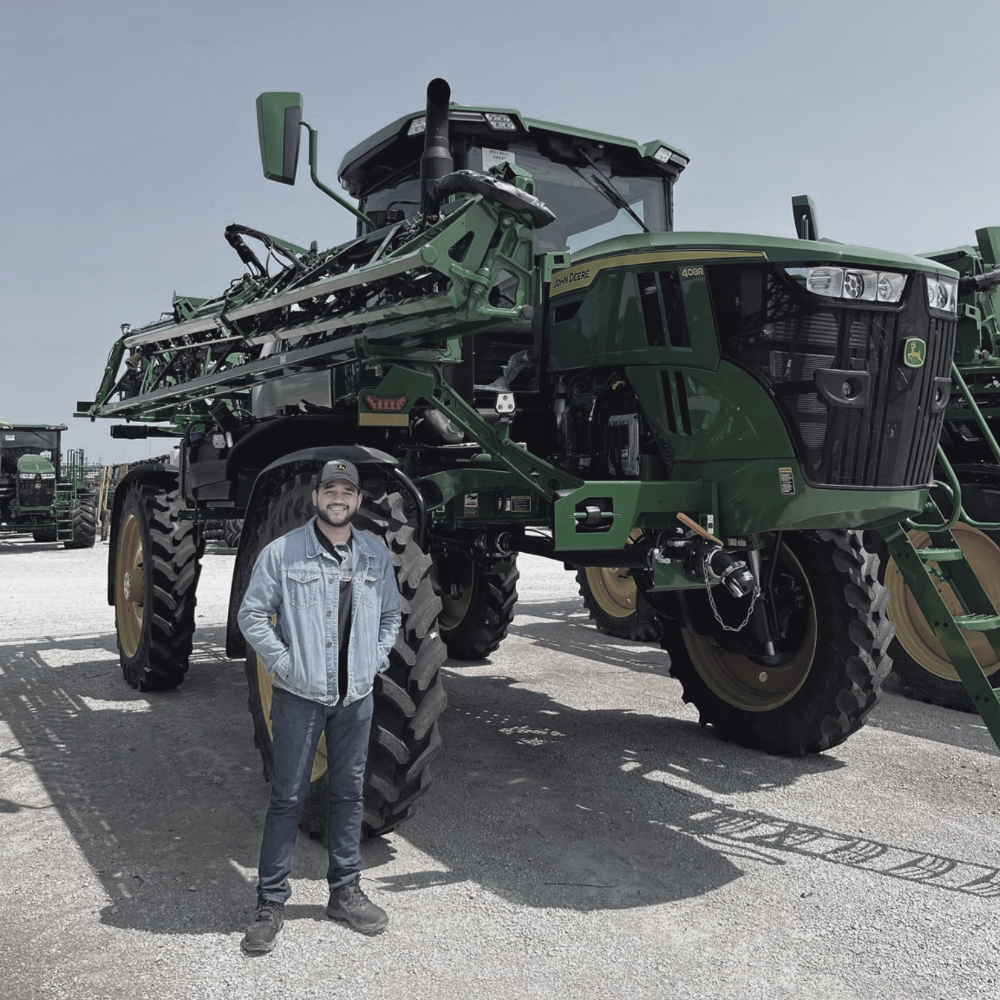

John Deere — Global Markets
Suspension Control System for Sprayers
Chassis & PowerTrain domain. A high-clearance sprayer engineered for Brazil's steep agricultural terrain; requiring deep discovery with field operators and cross-functional delivery across global engineering teams.
The Challenge
Translate real-world field constraints from Brazilian operators into precise embedded software requirements, while coordinating delivery across multicultural teams in multiple time zones.
The Outcome
Suspension transition performance improved by 26%. Product on track for global launch in 2027.
↑ 26% suspension transition performance
